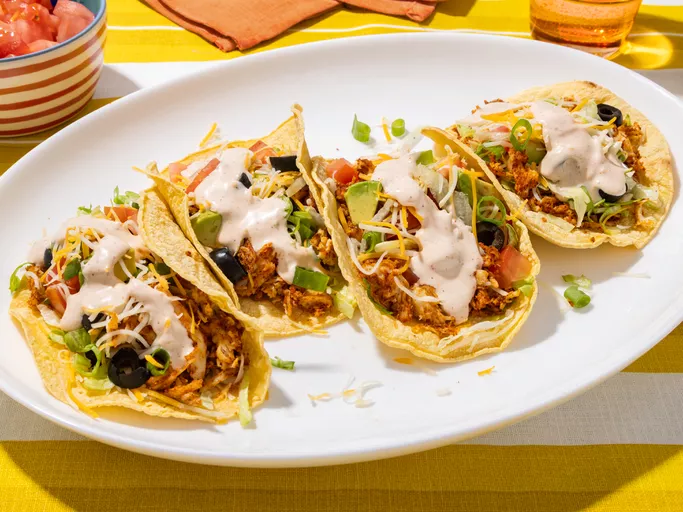

Tacos
Home

Description
A changer of pace from the usual regular uninspired mexican tacos
Ingredients
- ½ cup ranch dressing
- ¼ cup reduced-fat sour cream
- 1 (1 ounce) packet taco seasoning mix, divided
- 1 tablespoon mild chunky salsa
- cups shredded rotisserie chicken
- 8 (6 inch) corn tortillas
- lettuce
- 1 tomato
- green onions, sliced
- 1 (4 ounce) can sliced black olives
- 1 cup shredded Colby-Monterey Jack cheese
Steps
- Gather all ingredients
- Combine ranch dressing, sour cream, 1 teaspoon taco seasoning,
and salsa in a small bowl. Cover and refrigerate until serving.
- Toss chicken with remaining taco seasoning. Cover bowl loosely with wax paper or plastic wrap.
Microwave chicken until chicken is heated through, about 2 to 3 minutes.
- Warm tortillas in a skillet for about a minute on each side to make them pliable.
- Place a scoop of chicken on the tortilla and top with lettuce,
tomato, green onion, olives, avocado, cheese, and a spoonful of the ranch dressing mixture.